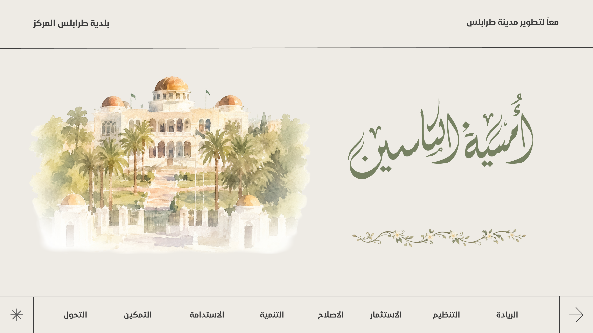

بلدية طرابلس المركزمعاً لتطوير مدينة طرابلس
وثيقة البلدية
الرؤية الاستراتيجية 2030
وثيقة بلدية طرابلس المركز، متاحة للتحميل المباشر أو عبر رمز الاستجابة السريعة.

وصول سريع
امسح الرمز لتحميل الوثيقة
يفتح الرمز صفحة تحميل مهيأة للهواتف، مع رابط مباشر بديل.
صفحة التحميل الآمنة